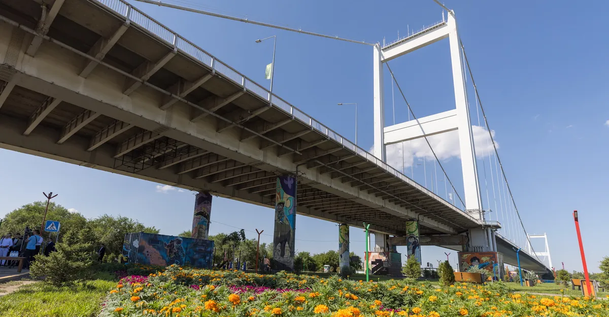
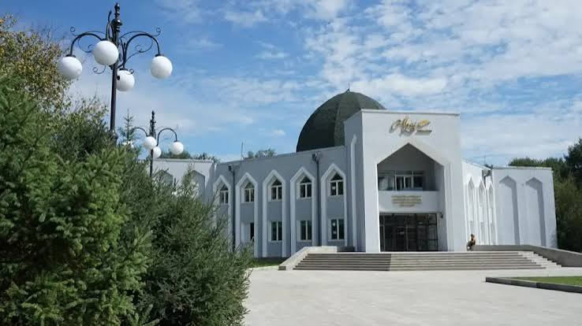
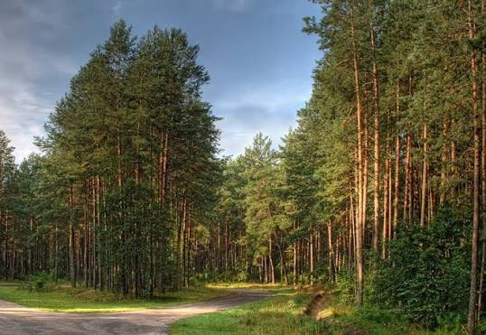
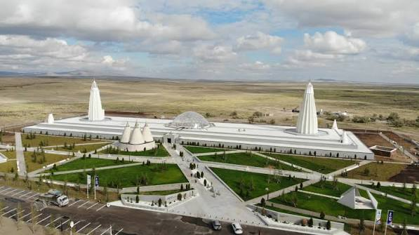

Famous Places

Suspension Bridge
The Semey Suspension Bridge is a unique suspension road bridge across the Irtysh River in the city of Semey, serving as the main symbol and landmark of the city.
Learn More
Abai Museum
The State Historical, Cultural, and Literary-Memorial Reserve-Museum of Abai in Semey is one of the main cultural hubs of Kazakhstan. It is entirely dedicated to the life, creative work, and legacy of the great poet, philosopher, and founder of Kazakh written literature, Abai Kunanbayev.
Learn More
The Pine Forest
The pine forest in Semey is a living fossil dating back to the Ice Age. Around 10,000 years ago, as massive glaciers retreated across Eurasia, they left behind long, parallel tracks of sandy deposits. The pines adapted specifically to these sandy tracks, growing in distinct, long lines across the landscape, which is why they are called "ribbon forests".
Learn More
Zhidebay
Zhidebay is a historic and culturally significant valley located in the Abai Region of Kazakhstan. It is widely revered as the spiritual and literary heartland of the country, as it was the cradle and final home of Kazakhstan’s greatest poet, philosopher, and social reformer, Abay Kunanbayev.
Learn MoreHistory of Semey
Semey was founded in 1718 as a fortress by decree of Peter the Great and named after the ruins of seven nearby Buddhist temples. Due to frequent flooding of the Irtysh River, the fortress was relocated four times before evolving into a wealthy merchant hub connecting Russia, Central Asia, and China. In the early 20th century, the city served as the capital of the first Kazakh autonomy, Alash Orda, and also became the official birthplace of Kazakh football, home to the country's first teams in 1913.
The cultural history of Semey is truly unique: it is where the great Kazakh poet Abai Kunanbayev lived and where the world-renowned writer Fyodor spent his years in exile. Geographically, the city is remarkable for being located just 40 kilometers from the center of the Eurasian continent. Spanning the banks of the Irtysh River is a unique suspension bridge, which is one of a kind in the CIS region. In modern history, Semey gained global recognition with the closure of the Semipalatinsk nuclear test site in 1991, becoming a symbol of the global anti-nuclear movement, and today it serves as the capital of the Abai Region.